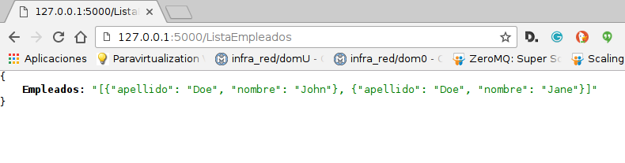

Crear datos JSON a partir de un diccionario en Flask (parte 1).
Publicado el sáb 25 junio 2016 en Tutorial Python • 1 min de lectura
Los artículos anteriores sobre el microframework Flask lo pueden revisar en el siguiente enlace.
Este artículo se basa en un artículo en inglés que se títula: How to create JSON in Python flask.
El código de este artículo lo pueden encontrar en gitlab en el siguiente enlace.
La idea es crear datos JSON a partir de un diccionario que maneja una lista de empleados, y se publica vía web por medio de flask.
El código de app.py se muestra a continuación:
#!/usr/bin/env python
#Se importa de flask a Flask, jsonify y json
from flask import Flask,jsonify,json
#Se crea la instancia de la aplicacion
app = Flask(__name__)
#Se tiene una lista de nombres
lista = ["John Doe","Jane Doe"]
#Se crea
#Se define el decorador route donde se da la ruta del servidor web.
@app.route("/ListaEmpleados")
def ListaEmpleados():
try:
#inicializar la lista de empleados
listaEmpleados = []
#crear instancias para llenar la lista
for i in lista:
datos = i.split(" ")
listaEmpleados.append({'nombre': datos[0],'apellido': datos[1]})
# convertir en dato json al diccionario
jsonStr = json.dumps(listaEmpleados)
except Exception ,e:
print str(e)
#Retorna el json
return jsonify(Empleados=jsonStr)
if __name__ == '__main__':
app.run()
Ahora se ejecuta:
python app.py
Se abre el navegador en http://localhost:5000/ListaEmpleados .
La siguiente figura muestra lo que devuelve el navegador:

En próximo artículo se continua con la parte de trabajar con el json.
¡Haz tu donativo! Si te gustó el artículo puedes realizar un donativo con Bitcoin (BTC) usando la billetera digital de tu preferencia a la siguiente dirección: 17MtNybhdkA9GV3UNS6BTwPcuhjXoPrSzV
O Escaneando el código QR desde la billetera: